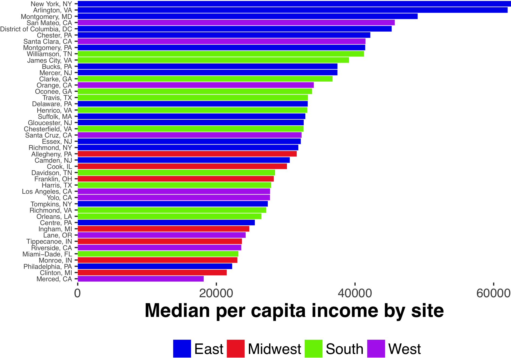
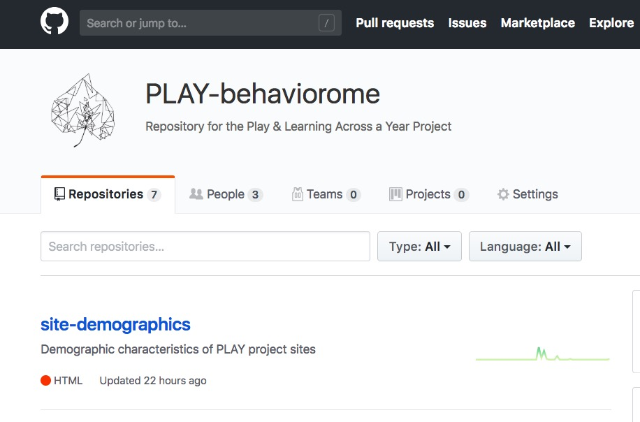

Maintaining participant privacy
- Ask permission to share (especially for sensitive, identifiable data)
- Use template language
- (Gilmore & Nilsonne, 2017)
- Don’t promise to destroy data (but GDPR?)
- Don’t unduly restrict future reuses


[Munafo et al. 2017]](http://doi.org/10.1038/s41562-016-0021)
Adolph, K., Tamis-LeMonda, C. & Gilmore, R.O. (2017). PLAY Project: Pilot Data Collections. Databrary. Retrieved August 21, 2018 from https://nyu.databrary.org/volume/444
The PLAY Project Wiki: https://dev1.ed-projects.nyu.edu/wikis/docuwiki/doku.php/landing


Adolph, K., Tamis-LeMonda, C. & Gilmore, R.O. (2017). PLAY Project: Pilot Data Collections. Databrary. Retrieved August 21, 2018 from https://nyu.databrary.org/volume/444




Video-enhanced wiki: https://dev1.ed-projects.nyu.edu/wikis/docuwiki/doku.php
acs, choroplethr packages


This talk was produced on 2018-09-05 17:13:35 in RStudio 1.1.453 using R Markdown. The code and materials used to generate the slides may be found at https://github.com/gilmore-lab/2018-09-07-fprs/. Information about the R Session that produced the slides is as follows:
## R version 3.5.1 (2018-07-02)
## Platform: x86_64-apple-darwin15.6.0 (64-bit)
## Running under: macOS Sierra 10.12.6
##
## Matrix products: default
## BLAS: /System/Library/Frameworks/Accelerate.framework/Versions/A/Frameworks/vecLib.framework/Versions/A/libBLAS.dylib
## LAPACK: /Library/Frameworks/R.framework/Versions/3.5/Resources/lib/libRlapack.dylib
##
## locale:
## [1] en_US.UTF-8/en_US.UTF-8/en_US.UTF-8/C/en_US.UTF-8/en_US.UTF-8
##
## attached base packages:
## [1] stats graphics grDevices utils datasets methods base
##
## loaded via a namespace (and not attached):
## [1] compiler_3.5.1 backports_1.1.2 magrittr_1.5 rprojroot_1.3-2
## [5] htmltools_0.3.6 tools_3.5.1 revealjs_0.9 yaml_2.1.19
## [9] Rcpp_0.12.18 stringi_1.2.4 rmarkdown_1.10 knitr_1.20
## [13] stringr_1.3.1 digest_0.6.15 evaluate_0.11